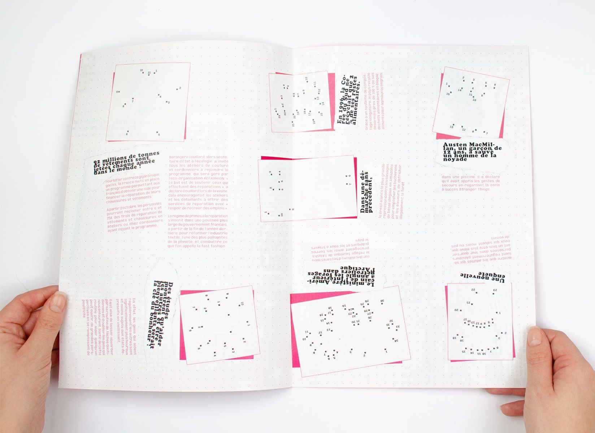
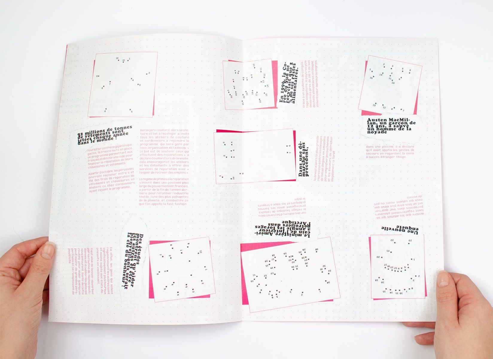

Le verre à moitié plein est un média positif qui s’adresse aux urbain•es, imaginé pour apporter une touche positive dans une actualité inquiétante.
En reprenant les codes visuels non-conventionnels des fanzines, j’ai pensé une mise en page qui bouscule les habitudes et le regard.
Ainsi, par une orientation surprenante des textes et une participation active, la lecture du journal entraîne un mouvement vivifiant du corps et de l’esprit.
Édition • Journal A3 de 8 pages
 
